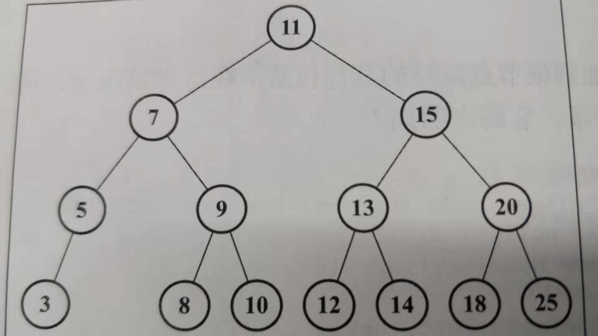

1递归含义：在某时某刻某个条件下调用包含自己的函数
2:注意点：⑴递归过程中一定要加限制条件，要不然会陷入死循环：
死循环eg：
function f(someP){
f(somP);
}
f(4); //Uncaught RangeError: Maximum call stack size exceeded正常调用：
//计算输入某个正整数，然后一直向下叠加 ，这里仅仅做一个简单示例，不进行输入num的判断
function f(num){
let x;
if(num>0){
x =num + f(num-1);
return x;
}
return false;
}
f(5);⑵递归有个过程，不是一步到位的，这一点尤其重要，因为在学习JS数据结构与算法中的二叉搜索树的移除代码会至关重要，不懂递归过程的话很容易看不懂移除代码
function getSum(num){
if(x === 1){
return 1;
}
return num + getSum(num-1)
}
getSum(5);过程如下：
①：getSum(5)调用函数并传入参数5，执行函数中的num +getSum(num-1) ->5+getSum(5-1)
②：getSum(4)调用函数并传入参数4，执行函数中的num+getSum(num-1) ->4+getSum(4-1)
③：getSum(3)调用函数并传入参数3，执行函数中的num+getSum(num-1) ->3+getSum(3-1)
④：getSum(2)调用函数并传入参数2，执行函数中的num+getSum(num-1) ->2+getSum(2-1)
⑤：getSum(1)调用函数并传入参数1，执行函数中的return 1；
⑥：这时候再一步一步往回走，即1+2+3+4+5；即可以理解为递归调用过程中，是不会立即计算的，要等到限制条件结束后，才会一步一步往上计算。
3：二叉搜索树的移除节点：移除节点程序是二叉搜索树程序方法中最复杂的一个。
eg：
class Node{ //节点类
constructor(key){
this.key = key;
this.left = null;
this.right = null;
}
}
function defaultCompare(a, b) { //比较函数
if (a === b) {
return Compare.EQUALS;
}
return a < b ? Compare.LESS_THAN : Compare.BIGGER_THAN;
}
const Compare = {
LESS_THAN: -1,
BIGGER_THAN: 1,
EQUALS: 0
};
class BinarySearchTree{
constructor(compareFn = defaultCompare){
this.compareFn = compareFn;
this.root = null;
}
remove(key){
this.root = this.removeNode(this.root,key);
}
removeNode(node,key){
if(node == null){
return null;
}
if(this.compareFn(key,node.key) === Compare.LESS_THAN){ // (1)
node.left = this.removeNode(node.left,key); //(2)
return node; //(3)
}else if (this.compareFn(key,node.key) === Compare.BIGGER_THAN){ //(4)
node.right = this.removeNode(node.right,key); //(5)
return node; //(6)
}else{ //(7)
if(node.left == null && node.right == null){ //(8) //第一种情况，移除一个叶节点（只有父节点没有子节点的节点）
node = null; //(9)
return node; //(10)
}
if(node.left == null){ //第二种情况，移除有一个左or右子节点的节点
node = node.right; //(11)
return node; //(12)
}else if(node.right == null) {
node = node.left; //(13)
return node; //(14)
}
const aux = this.minNode(node.right); //(15) //第三种情况，移除有两个子节点的节点
node.key = aux.key; //(16)
node.right = this.removeNode(node.right,aux.key); //(17)
return node; //(18)
}
}
}
const tree1 = new BinarySearchTree();
tree1.remove(8);
假设现在有一个节点顺序为

现在我们需要移除节点8，则代码的顺序应该是：
①：开始时key:8 node: Node{ key: 11, left : Node, right : Node}，进入行(1)，判断大小后进入行(2)，此时key:8 node: Node{ key: 7, left : Node, right : Node}
②：递归调用第一次，进入行(4)判断大小后进入行(5)，此时key:8 node: Node{ key: 9, left : Node, right : Node}
③：递归调用第二次，进入行(1)判断大小后进入行(2)，此时key:8 node: Node{ key: 8, left : null, right : null}
④：递归调用第三次，进入行(7 ，8， 9)，返回一个node，此时key: 8 ,node ：null；
⑤：进入行(3)，此时结果为： key:8 ,node:Node{key: 9 ,left:null,right:Node};
⑥：进入行(6)，此时结果为： key:8 ,node:Node{key: 9 ,left:Node,right:Node};
⑦：进入行(3)，此时结果为：key:8 ,node:Node{key: 11,left:Node,right:Node};
⑧：返回到remove()后，跳出程序，节点8已移除。
备注1：上述步骤只实现了第一种情况，如果有需要，读者可以用chrome的调试工具进行断点调试，在Sources中可查看key及node的具体情况，
备注2：这里很明显说明了递归调用的执行顺序，我就是因为不懂执行顺序，这段代码看了我2个多小时。。。。。切记切记，